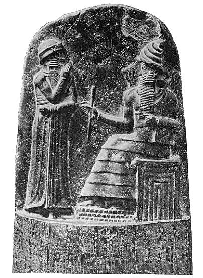

History of Law
From Oral Traditions to Written Rules
Introduction Section
The history of laws explains how human societies developed rules to maintain order and justice. In early times, there were no written laws. People relied on oral traditions, customs, and community practices to guide behavior. These unwritten rules were passed from one generation to another and helped maintain discipline within small communities.
However, as societies grew larger and more complex, oral systems became difficult to manage. Misunderstandings increased, and disputes became harder to resolve. To solve these problems, civilizations gradually shifted from oral traditions to written laws. This transition marked a major step in the development of organized society.
What is Law?
At its core, law is a system of rules created and enforced through social or governmental institutions to regulate behavior. It provides a predictable framework for resolving conflicts and maintaining order within a community. Laws define rights, duties, and punishments, ensuring stability and fairness in society.
From Oral Traditions to Written Rules
Before the invention of writing, societies depended entirely on oral traditions. Elders or leaders memorized customs and passed them down through stories, songs, and proverbs. While this worked for small tribes, it became unreliable as populations expanded.
The move to written rules happened for several important reasons. Writing laws made them permanent and consistent. It ensured that rules would not change depending on memory or personal interpretation. Written laws could also be displayed publicly, allowing everyone to know the rules.
Most importantly, written codes limited the arbitrary power of rulers. Leaders could no longer change laws freely to favor certain individuals. As trade expanded between cities and regions, written laws also helped establish clear agreements and contracts.
Key Reasons for the Shift to Written Laws
- Permanence and consistency
- Public accessibility
- Limiting arbitrary power
- Supporting complex trade systems
Importance of Studying the History of Laws
Studying the history of laws helps us understand how modern legal systems developed. Over time, legal systems evolved to focus more on fairness, equality, and justice. The transition from informal customs to structured legal frameworks shaped civilization itself.
Today’s laws are the result of centuries of development, influenced by different cultures and historical events. Understanding this evolution allows us to appreciate the importance of law in maintaining order and protecting individual freedoms.

Ancient civilizations laid the foundation for modern legal systems.
Go Back Up ↑